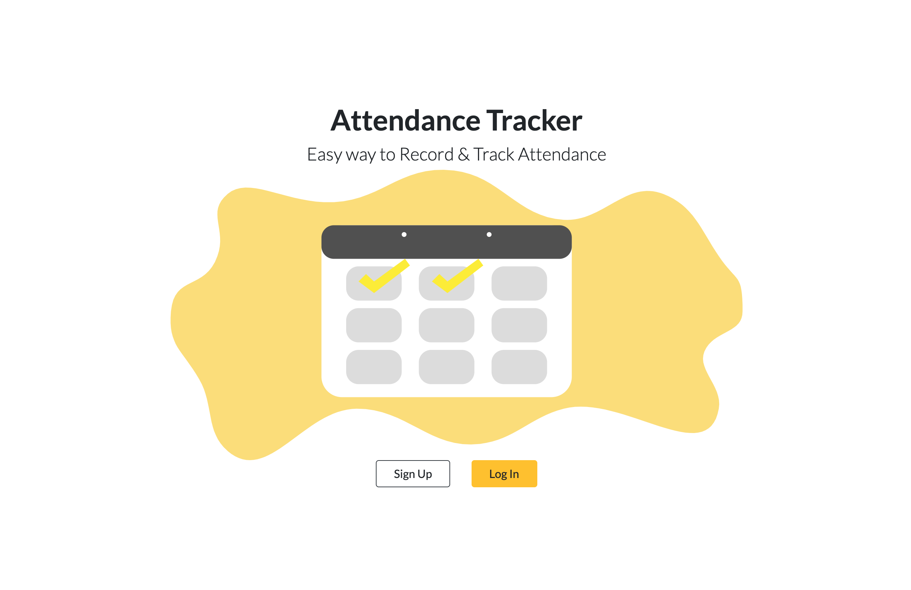
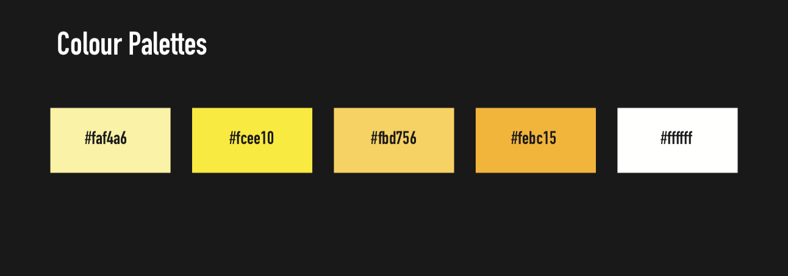

attendance web app
Role
Digital Product Designer, Front-End Developer
Attendance Web App Project
Taking attendance is an everyday task for many teachers. A task that, although seemingly easy, can be very time consuming and convoluted. Currently, many teachers still take attendance manually with paper and a pencil. This method wastes resources (paper), space (storing records), and time (tallying). Teachers are in need of a tool that allows them to easily take and track attendance digitally across numerous classes.
The Challenge
To solve the issue faced by teachers, our goal was to create a functional web-based application that could be easily used by teachers to take and track the attendance of their students. The app had to allow teachers to enter students named and use the app to take attendance over multiple classes. Additionally, the app works to tally the current attendance record of a student.
The Goal
To solve the issue faced by teachers, our goal was to create a functional web-based application that could be easily used by teachers to take and track the attendance of their students. The app had to allow teachers to enter students named and use the app to take attendance over multiple classes. Additionally, the app works to tally the current attendance record of a student.
1. UX team - design layouts, wireframes and mockups relevant too said functionality using Figma, to allow for numerous users and easy sharing. Develop a general branding outline and colour scheme.
2. Front-end - code the different pages using version control/GitHub to allow each developer to have access to and preview code at any given time.
2. Back-end developers - Implement a technical stack based on factors such as comfort, ease of use, and ability to run an application off of the cloud. Include an express server with a document-based database to store data.
My Role
As the front-end developer and UX Designer, I was responsible for designing layouts using the University of Waterloo brand guideline, designing multiple iterations of wireframes and mockups using Figma, and coding the different pages using HTML, CSS, and Bootstrap.
The Approach
Ideation + Understanding the end-user
Before designing the attendance web app, I wanted to understand more about the end user we were solving for. I used an archetype persona to help me learn more about the needs + wants of a teacher when they track or record attendance.
I also looked at different types of design trends that are used to record data. A dashboard seemed like a key feature to include for professors to track attendance across numerous classes.
Insights and Behaviours
I analyzed the key features we needed to achieve a minimum viable product (MVP) for this project: the ability to log in, have numerous classes, add/edit students into class lists, take attendance, and preview attendance records. I came up with a dashboard type design for the solution we were assigned because they are used to display the most important information in an app. Users can easily click a tab and navigate to what they are looking for.
By following an Agile iterative development, I developed and delivered more with quick short cycles. There was more room for change, improvement in quality, and transparency.
Design and Development
Once the front-end development was complete, each of the pages were reviewed to ensure there were no bugs or issues in terms of layout and visuals. The backend of the project utilizes an express server in node.js as well as a NoSQL database using Firestore.
Lastly, Firebase’ Firestore a NoSQL document-based database was used to store our data, chosen for its seamless integration with Firebase, flexibility, real-time updating, and offline support. The application backend was then deployed on Heroku allowing us to run our application off the cloud without having to worry about maintaining a server. Front end interaction was done using Handlebars.js a templating engine that allowed us to pass data to the HTML front end and complete our application.
Low-fidelity Mockups
All of the mockups were designed in Figma. Using Figma allows for numerous users and easy sharing, I designed wireframe mockups of the pages.

High-fidelity Mockups
All of the mockups were designed in Figma. Using Figma allows for numerous users and easy sharing, I designed wireframe mockups of the pages.
Branding
As a UX Designer, when designing mockups for the web app I applied the University of Waterloo's branding on the app. Seeing that this is a tool that can be implemented in a classroom, we decided to give it an actual University branded feeling.
Looking Back
1. Working in an Agile environment
Working with Agile and multiple sprints, I was able to easily communicate with the backend developers when designing the web app and developing the core functionality of the front-end. It was a great learning curve for me as I learned a lot of backend development and how to store data within a database.
2. Future Developments
Due to the time constraints given, full functionality such as login authentication wasn’t implemented in this iteration but would be the next step in features for future development.
An active version of this web app is deployed on Heroku and can be viewed here Attendance Web App.